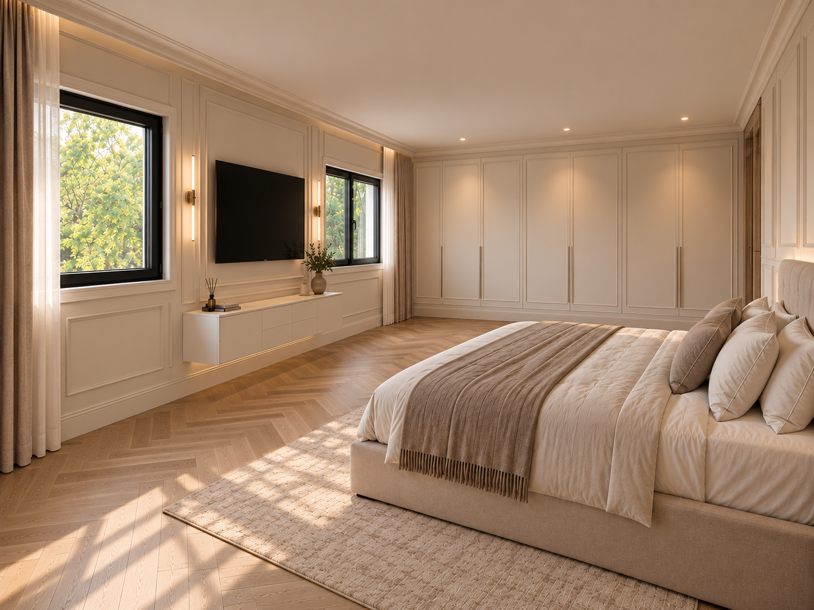
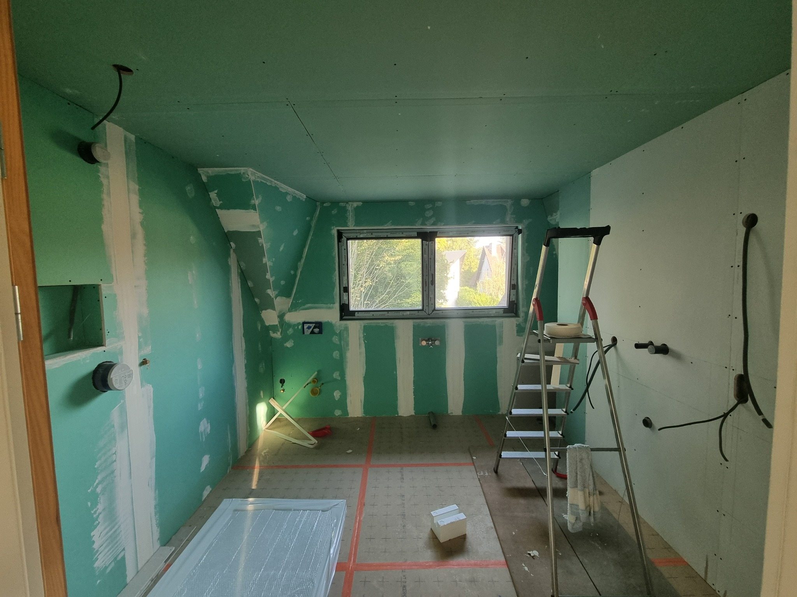
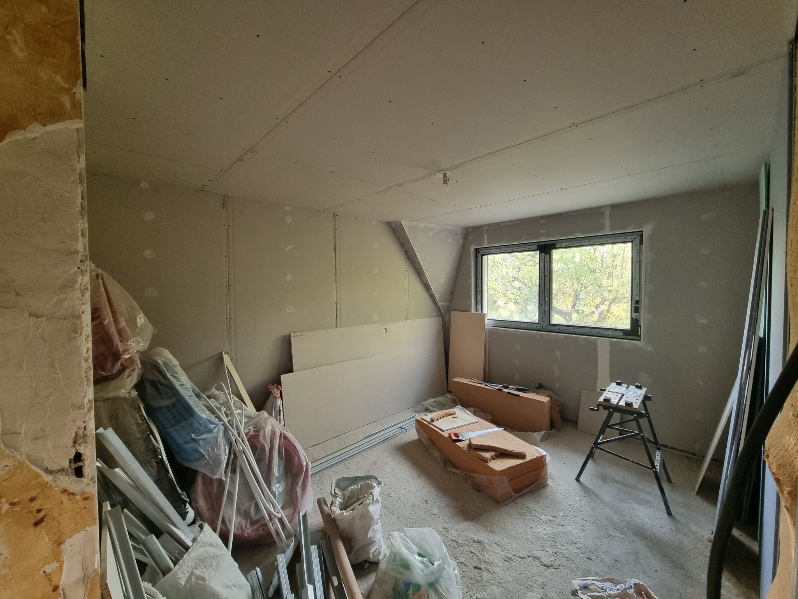
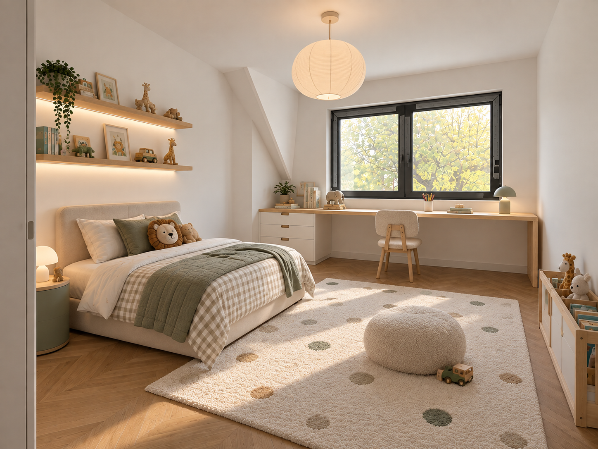
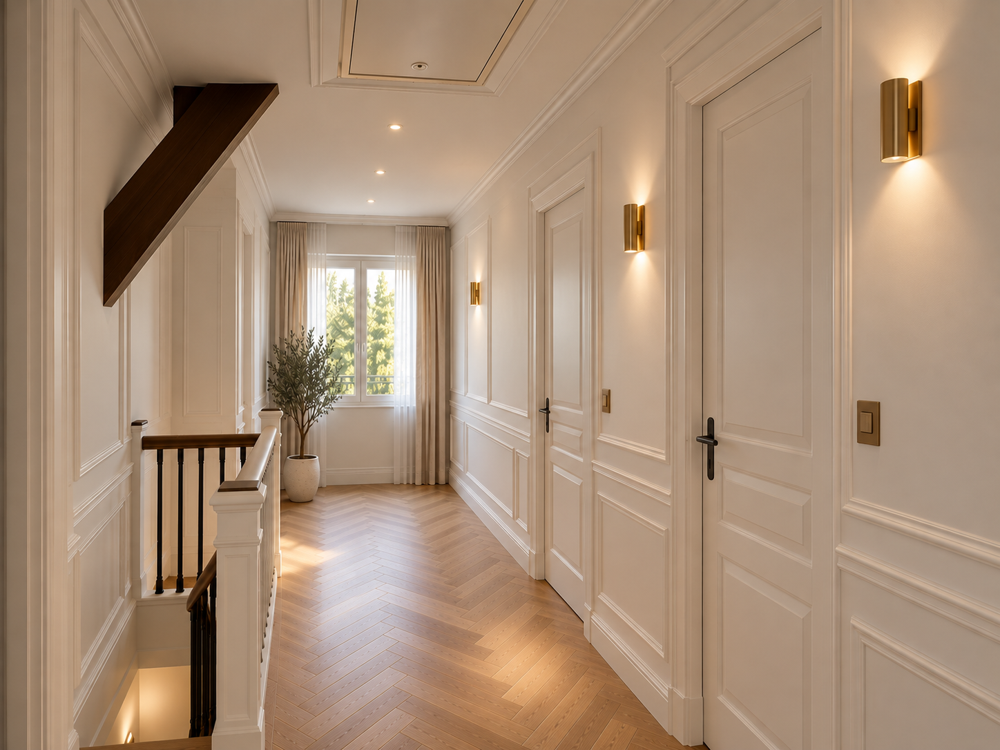
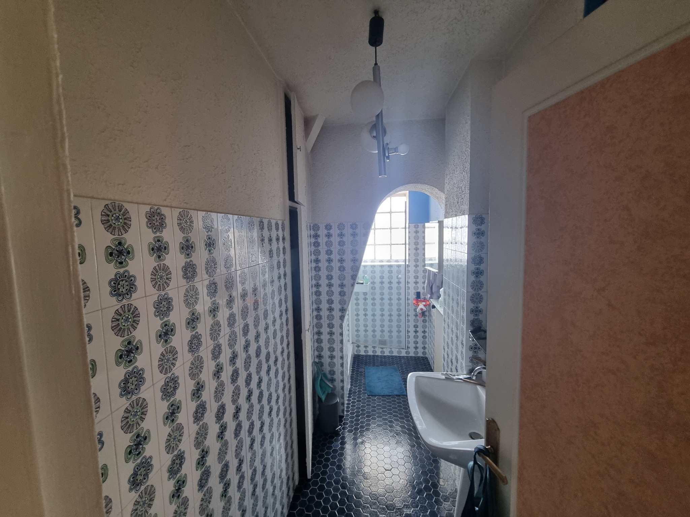
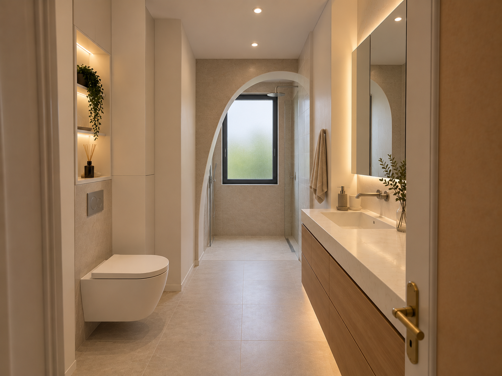

Étape 01
Le premier étage

Rénovation complète d’une maison familiale d’environ 200 m² à Ormesson-sur-Marne.
Le projet se déroule en trois temps : transformation du premier étage, rénovation du rez-de-chaussée, puis réaménagement des extérieurs.
Une pièce entièrement reprise pour créer une suite lumineuse et chaleureuse : parquet en chevrons, menuiseries sombres, rangements intégrés et décor classique contemporain.
 Avant
Avant
ProjetTransformation en salle de bains généreuse avec baignoire îlot, douche double, double vasque, rangements intégrés et surfaces effet marbre.

Avant Projet
ProjetUne chambre douce et évolutive, pensée autour de la lumière naturelle : bureau sous la fenêtre, parquet en chevrons et univers végétal aux tons chaleureux.

Avant
ProjetUn palier plus resserré, avec parquet en chevrons, moulures, trappe de plafond soignée et éclairage par spots et appliques. Le mur de droite se prolonge jusqu’au fond avec ses deux portes.
 Avant
Avant
ProjetLa salle de bains existante est repensée avec un meuble vasque à droite, des toilettes suspendues à gauche et une douche derrière l’arche, sous une fenêtre anthracite à vitrage dépoli.

Avant
ProjetUne chambre lumineuse aux murs blancs et moulures, avec parquet en chevrons et rangements intégrés.
 Projet
Projet